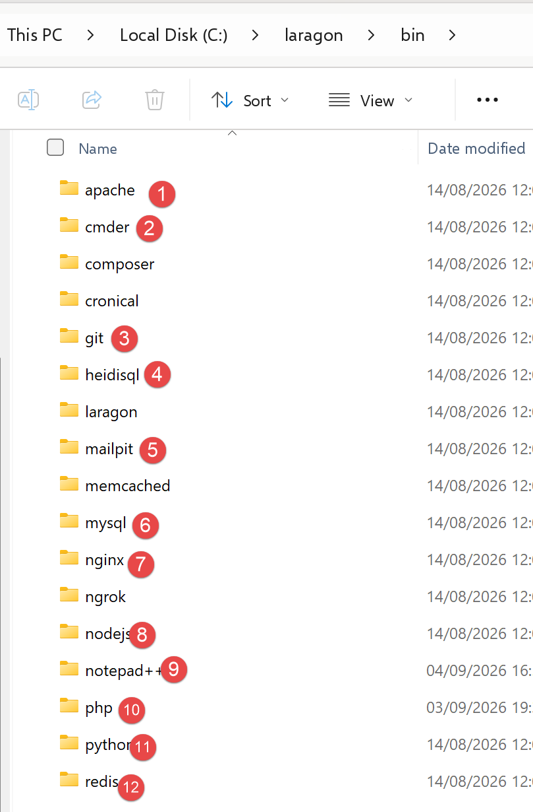
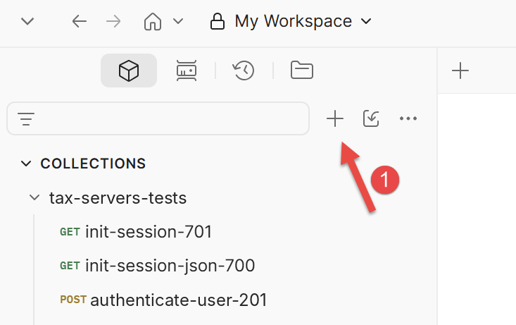
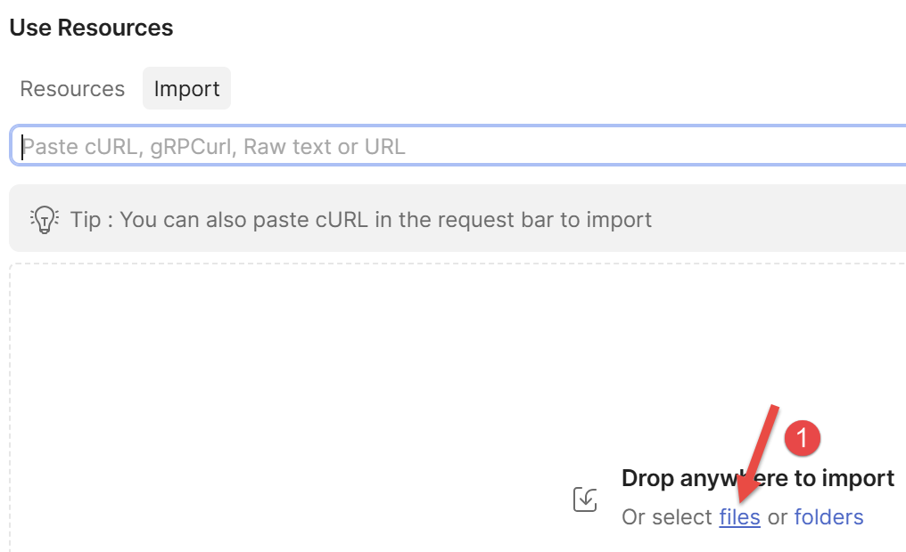
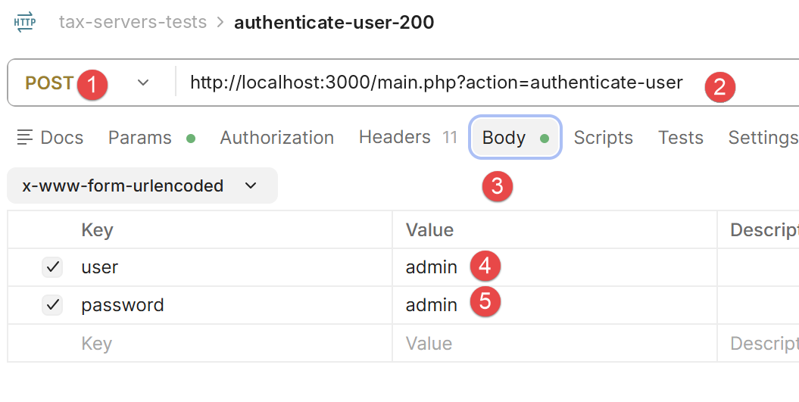
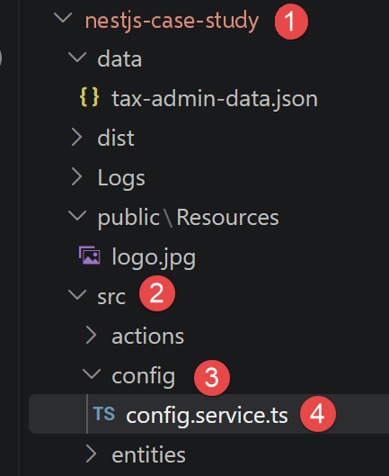
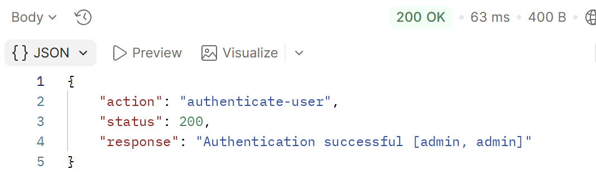
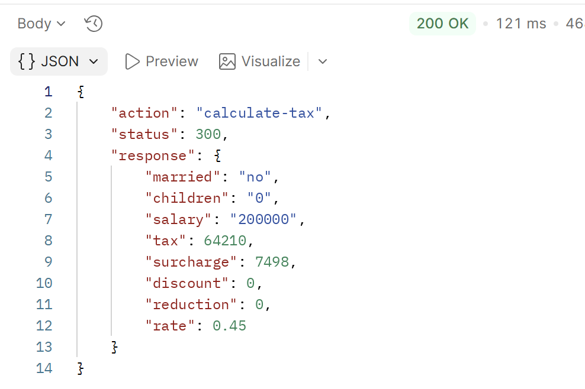
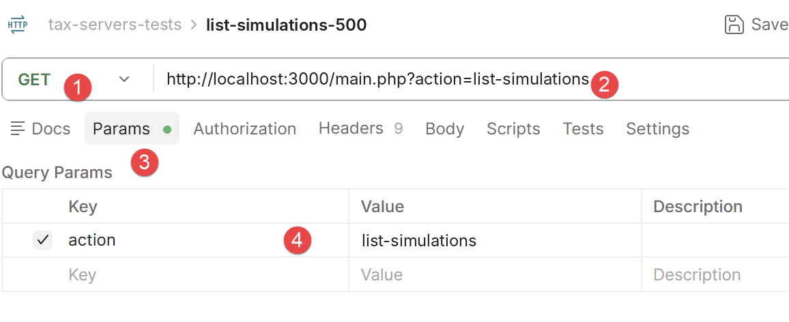

4. Een NestJS-server installeren
Opmerking: In het vervolg wordt soms verwezen naar een PHP-server, die uit de cursus [Introduction to the PHP7 Language Through Examples]. De NestJS-server implementeert dezelfde diensten als deze PHP-server.
We behandelen de HTTP-functies van TypeScript, de functies waarmee u een webserver kunt bevragen. Voor onze tests hebben we een webserver nodig. We gebruiken de server die is ontwikkeld in de „Casus”-paragraaf: de server voor de belastingberekening in NestJS. Deze server host een JSON-service die de volgende diensten aanbiedt:
- [init-session] — GET main.php?action=init-session&type=json — geeft de server aan dat we JSON-antwoorden willen;
- [authenticate-user] — POST main.php?action=authenticate-user: De twee via POST verzonden parameters [user, password] bepalen of de verbinding met de JSON-service al dan niet is toegestaan. Standaard zijn de inloggegevens [admin, admin];
- [calculate-tax] — POST main.php?action=calculate-tax: De via POST verzonden parameters [married, children, salary] worden gebruikt om een belasting te berekenen:
- married: „yes” als gehuwd, anders „no”;
- children: aantal kinderen van de belastingplichtige;
- salary: het jaarsalaris van de belastingplichtige;
- [list-simulations] — GET main.php?action=list-simulations — toont de simulaties die sinds het begin van de sessie zijn uitgevoerd;
- [delete-simulation] — GET main.php?action=delete-simulation&number=x — verwijdert simulatie nr. x uit de lijst met simulaties;
- [get-admindata] — GET main.php?action=get-admindata — haalt de volledige database die bij de server hoort op in een JSON-object;
- [end-session] — GET main.php?action=end-session: beëindigt de sessie. Om een nieuwe te starten, moet de gebruiker de hierboven beschreven opdracht „init-session” geven;
We beschrijven nu hoe u deze server installeert. Als u deze server niet wilt installeren, ga dan direct naar de paragraaf „De HTTP-functies van TypeScript”. U kunt de scripts dan niet in een draaiende omgeving testen, maar u kunt wel de code bekijken.
4.1. Laragon installeren
Vanaf september 2026 is de tool Laragon beschikbaar op de URL [Download Laragon – Fast & Modern Dev Environment ]. Laragon bevat tools waarmee u een PHP-server en het DBMS MySQL kunt installeren:

- in [1], een Apache-webserver;
- in [2], het DBMS MySQL;
- in [3], een berichtentool die we niet gebruiken;
- [4] start alle services (Apache, MySQL, MailPit);
- [5] toont de webpagina op de URL [http://localhost]. Standaard verwijst deze URL naar de map <laragon-install>\www, waarbij <laragon-install> de installatiemap van Laragon is;
- in [6] wordt de tool HeidiSQL gestart, waarmee u MySQL-databases kunt beheren. We gebruiken deze tool om de database aan te maken die door de server voor de belastingberekening wordt gebruikt;
- in [7] opent u een terminal; alle binaries die Laragon nodig heeft, staan in PATH;
- in [8] opent u Windows Verkenner op de map die bij de URL [http://localhost] hoort;
De installatiemap van Laragon bevat de volgende onderdelen:
 |
- In [1] bevat de map [bin] talloze applicaties:
 |
- in [1], de Apache-webserver;
- in [2], een opdrachtregelterminal;
- in [3], een [git]-client waarmee u de verschillende versies van een project beheert;
- in [4], een databasebeheerder;
- [5], een e-mailbeheerder;
- in [6], het DBMS MySQL;
- [7], een andere webserver;
- in [8], [node.js] om JavaScript-scripts uit te voeren;
- [9], een teksteditor;
- in [10], de PHP-interpreter;
- in [11], de [Python]-interpreter;
- [12], een cacheserver;
Laragon wordt geleverd met een uitgebreide ontwikkelomgeving. In deze cursus gebruiken we alleen het DBMS MySQL [6] en [heidisql] om dit grafisch te beheren;
4.2. De NestJS-server installeren en configureren
Een NestJS-server voor een sterk vereenvoudigde belastingberekening vindt u in de map nestjs-case-study binnen de scriptdirectory van deze cursus:
nestjs-case-study/
├── package.json
├── nest-cli.json
├── .env.example
├── create_dbtaxes.sql
├── src/
│ ├── main.ts
│ ├── main.controller.ts
│ ├── app.module.ts
│ ├── actions/
│ ├── config/
│ ├── entities/
│ ├── filters/
│ ├── model/
│ ├── responses/
│ ├── session/
│ └── utilities/
└── views/
Als u de afhankelijkheden voor de hele directoryboom al hebt geïnstalleerd (met npm install in de rootdirectory, via de npm-workspaces die in de inleiding van dit document zijn beschreven), bevat de map nestjs-case-study al zijn node\_modules. Zo niet, ga dan naar die map en voer uit:
Opmerking: Als u de batchinstallatie hebt gevolgd die in de inleiding wordt beschreven (door npm install uit te voeren in de root van typescript-nestjs-course-scripts), is deze stap al voltooid: ga direct door naar de configuratie hieronder.
De server heeft een bestand .env nodig om de verbindingsinstellingen op te geven voor de MySQL-database die door Laragon is gemaakt (zie hierboven), evenals de luisterpoort. Kopieer het meegeleverde bestand .env.example naar .env en pas het vervolgens aan:
PORT=3000
TAX_DATA_SOURCE=mysql
DB_HOST=localhost
DB_PORT=3306
DB_NAME=dbtaxes-2019
DB_USER=admtaxes
DB_PASSWORD=pwdtaxes
CORS_ALLOWED=true
SESSION_SECRET=change-me-in-production
- PORT: de luisterpoort van de NestJS-server (standaard is 3000).
- TAX_DATA_SOURCE: mysql om de hieronder gemaakte database te gebruiken;
- DB_HOST, DB_PORT, DB_NAME, DB_USER, DB_PASSWORD: de verbindingsparameters voor de database dbtaxes-2019 die we met HeidiSQL zullen maken (zie hieronder), met dezelfde inloggegevens als die in het script create_dbtaxes.sql dat in de directoryboom hierboven wordt getoond;
- CORS_ALLOWED: staat CORS-aanroepen (cross-origin) toe vanuit een TypeScript-client die op een andere poort draait.
- SESSION_SECRET: de sleutel waarmee de sessiecookie wordt ondertekend; wijzig deze als de server ooit openbaar toegankelijk moet worden gemaakt.
4.3. De database maken
Om de MySQL-database te maken die de NestJS-server nodig heeft, gebruiken we een optie van Laragon:
 |
- In [1] moeten alle services zijn gestart;
- in [2] kunt u via de optie [Database] de database beheren;
De optie [Database] start een hulpprogramma met de naam HeidiSQL:
 |
- In [1] kunt u verschillende DBMS'en selecteren. De standaardwaarde is het DBMS MySQL. Dit is prima;
- in [2] meldt u zich aan bij HeidiSQL;
 |  |
- In [1-2] voert u het SQL-bestand uit en selecteert u vervolgens het bestand [create_dbtaxes.sql], dat u in de map [nestjs-case-study] vindt:

Als u het bestand [2] uitvoert, wordt de database [dbtaxes-2019] aangemaakt die door de server voor de belastingberekening wordt gebruikt. Om deze te bekijken, drukt u in HeidiSQL op F5 om de weergave te vernieuwen:
 |
De database [dbtaxes-2019] is aangemaakt.
4.4. De NestJS-server starten
Zodra het bestand .env aanwezig is (en de database is aangemaakt), opent u een terminal in de root van de map [nestjs-case-study] en compileert en start u vervolgens de server:
Voor ontwikkeling, met automatisch herstarten na elke wijziging in de broncode, gebruikt u:
In beide gevallen toont de console:
[Nest] ... [NestFactory] Starting Nest application...
[Nest] ... [InstanceLoader] AppModule dependencies initialized
[Nest] ... [RoutesResolver] MainController {/}:
[Nest] ... [RouterExplorer] Mapped {/main.php, ALL} route
[Nest] ... [NestApplication] Nest application successfully started
Tax calculation server (NestJS) started on http://localhost:3000
JSON entry point: http://localhost:3000/main.php?action=init-session&type=json
HTML entry point: http://localhost:3000/main.php?action=init-session&type=html
De NestJS-server heeft één enkel ingangspunt (main.php, behouden voor compatibiliteit, ook al is het hier NestJS) dat alle verzoeken ontvangt, en een verzoekparameter „action” die de uit te voeren verwerking selecteert:
4.5. HTML-tests voor de server voor de belastingberekening
Start, als u dat nog niet hebt gedaan, alle Laragon-services (voor MySQL) en de NestJS-server (npm run start:prod of npm run start:dev; zie hierboven). Vraag vervolgens in een browser de URL op http://localhost:3000/main.php?action=init-session&type=html — dit is dezelfde actie init-session als bij de PHP-server, met dezelfde parameter type=html maar dan op poort 3000:
 |
De inloggegevens zijn admin/admin, precies dezelfde als voor de PHP-server; ze worden op dezelfde manier gedefinieerd, in de servercode in plaats van in config.json. Voer ze in:
 |
Vul het formulier in en verzend het. U ziet de volgende pagina:
 |
Het resultaat van de belastingberekening wordt weergegeven; deze pagina gebruikt dus daadwerkelijk de database die we zojuist hebben gemaakt. De link „Lijst met simulaties” in het menu aan de linkerkant toont de berekeningsgeschiedenis van deze sessie:
 |
Als u deze resultaten krijgt, werkt de NestJS-server voor de belastingberekening correct met zijn MySQL-database. We zijn nu klaar om de server met TypeScript-clients te bevragen. Hiervoor gebruiken we de JSON-versie van de server.
4.6. De JSON-API van de server voor de belastingberekening
4.6.1. Postman-tests
De PHP-server is getest met de desktoptool Postman. Dezelfde collectie verzoeken (tax-servers-tests.postman_collection.json, meegeleverd in de map nestjs-course) werkt identiek tegen de NestJS-server: de JSON-API is exact dezelfde, met dezelfde acties, dezelfde parameters en dezelfde statuscodes. Wijzig in Postman gewoon de poort van elk verzoek (80 → 3000), of nog eenvoudiger: wijzig de basis-URL in de collectie, als u die als variabele hebt gedefinieerd.
De tool Postman is beschikbaar op de URL [https://www.postman.com/downloads/]. Mogelijk moet u een account aanmaken.
Start alle Laragon-services en open vervolgens de desktopapp van Postman:
 |  |
- In [1-2] maakt u een HTTP-verzoek om de server voor de belastingberekening te bevragen;
 |
- In [1] kunt u uw HTTP-verzoek een naam geven. U kunt het opslaan en later terugvinden;
- In [2]: voer de URL in van de server die u wilt bevragen;
- in [3]: selecteer het type HTTP-verzoek. We gebruiken hierna twee typen: GET en POST;
- in [4]: als uw verzoek parameters heeft van het type [?param1=val1¶m2=val2&…], kunt u die hier definiëren;
- in [5]: als het verzoektype POST is, definieert u hier de verzonden waarden;
In [nestjs-course] vindt u een collectie HTTP-verzoeken aan de server voor de belastingberekening die u in POSTMAN kunt importeren.

Ga als volgt te werk. Voer in Postman [Ctrl-O] uit:
 |
- Gebruik de link [1] om het bestand [tax-servers-tests.postman_collection.json] uit de map [nestjs-course] te importeren:
 |
- In [1] de naam van de geïmporteerde collectie;
- in [2] de inhoud ervan. Dit is een lijst met (HTTP-)verzoeken aan de server voor de belastingberekening (JSON);
Laten we bijvoorbeeld het verzoek met de naam [init-session-json-700] bekijken. Het start een JSON-sessie met de server:
 |
- In [1] is het HTTP-verzoek een GET;
- in [2] de opgevraagde URL. Hiermee wordt een JSON-dialoog met de server gestart;
- in [3-4] vinden we de parameters van de GET;
- in [5] om het verzoek naar de server voor de belastingberekening te verzenden;
Zorg er voordat u het verzoek verzendt voor dat de Laragon-services zijn gestart. Het JSON-antwoord van de server is als volgt:
 |
Gebruik nu het verzoek met de naam [init-session-703]:

Het verzoek [1-3] is ongeldig. De parameters moeten van het type [?action=xx&type=yy] zijn, waarbij „type” „html”, „xml” of „json” kan zijn. Het type „x” wordt niet herkend. Het JSON-antwoord van de server is als volgt:
 |
Verzend het verzoek [init-session-json-700] opnieuw om een JSON-sessie opnieuw te starten. Verzend daarna het verzoek [authenticate-user-200] om u te authenticeren:
 |
- In [1] is het verzoek een POST;
- in [2] de URL van het authenticatieverzoek;
- in [3] de body van de POST, die de verzonden waarden bevat;
- [4-5], de twee verzonden waarden. Dit zijn de inloggegevens van de beheerder van de applicatie. Ze zijn gedefinieerd in het bestand [config.service.ts] van de server;

Het JSON-antwoord van de server is als volgt:
 |
Zodra u bent geauthenticeerd, kunt u een belastingberekening uitvoeren. Gebruik hiervoor het verzoek [calculate-tax-300]:
 |
- In [1] gaat het om een POST-verzoek;
- in [2] de opgevraagde URL;
- in [3-4] worden de drie waarden verzonden;
Het JSON-antwoord is als volgt:
 |
Voer het verzoek meerdere keren uit en wijzig telkens de verzonden waarden. Voer daarna het verzoek [list-simulations-500] uit, dat de lijst met uitgevoerde simulaties toont:
 |
- Het GET-verzoek [1-4] heeft slechts één parameter: [action]. Het JSON-antwoord is als volgt:
 |
Dit is de lijst met simulaties die u hebt uitgevoerd.
Gebruik het verzoek [delete-simulation-600] om een simulatie te verwijderen:
 |
- In [2] wordt de URL met een GET opgevraagd. Deze bevat twee parameters [action, number]. [number] is het nummer van de simulatie die u uit de lijst met simulaties wilt verwijderen. Hier verwijst nummer 0 naar de eerste simulatie in de lijst;
Het JSON-antwoord van de server is als volgt:
 |
Het JSON-antwoord is de resterende lijst met simulaties nadat er een is verwijderd;
Ten slotte kunt u de sessie beëindigen met het verzoek [end-session-400]:
 |
De URL van het verzoek [1-2] heeft alleen de parameter [action] (3). Het JSON-antwoord is als volgt:
 |
4.6.2. Tests met curl
We kunnen ook de tool [curl] gebruiken om de JSON-services van de server te testen. Alle onderstaande verzoeken gebruiken dezelfde HTTP-sessie (de optie -b/-c cookies.txt van curl bewaart de sessiecookie tussen de aanroepen, net zoals een browser of Postman dat zou doen):
Laten we een JSON-sessie starten met de actie [init-session]:
Statuscode 700 bevestigt dat de sessie is gestart; dit is dezelfde code die de PHP-server teruggeeft. Laten we ons nu authenticeren met de actie [authenticate-user], een POST-verzoek met één parameter in de URL (action) en de verzonden inloggegevens:
curl -b cookies.txt -c cookies.txt -X POST "http://localhost:3000/main.php?action=authenticate-user" \
-d "user=admin&password=admin"
{
"action": "authenticate-user",
"status": 200,
"response": "Authentication successful [admin, admin]"
}
U kunt nu belastingen berekenen met de actie [calculate-tax], opnieuw een POST-verzoek met de drie verzonden parameters: burgerlijke staat, kinderen, en salaris:
curl -b cookies.txt -c cookies.txt -X POST "http://localhost:3000/main.php?action=calculate-tax" \
-d "married=yes&children=2&salary=45000"
{
"action": "calculate-tax",
"status": 300,
"response": {
"married": "yes",
"children": 2,
"salary": 45000,
"tax": 502,
"surcharge": 0,
"discount": 857,
"reduction": 126,
"rate": 0.14
}
}
De waarden zijn exact dezelfde (€502 belasting, een korting van €857, een vermindering van 126 € en een tarief van 14%) als die in de vorige paragraaf in de browser werden getoond; de twee versies, HTML en JSON, delen dezelfde rekenmotor. De lijst met simulaties verkrijgt u met de actie [list-simulations], een eenvoudige GET:
{
"action": "list-simulations",
"status": 500,
"response": [
{
"married": "yes", "children": 2, "salary": 45000,
"tax": 502, "surcharge": 0, "discount": 857, "reduction": 126, "rate": 0.14
}
]
}
Voer het verzoek [calculate-tax] meerdere keren uit en wijzig telkens de verzonden waarden. Gebruik daarna [delete-simulation] om een simulatie uit de lijst te verwijderen (&number=x verwijst naar het volgnummer ervan) en [get-admindata] om de volledige database in JSON-formaat op te halen (belastingschijven en rekenconstanten). Beëindig ten slotte de sessie met de actie [end-session]:
U hebt nu een goed beeld van de JSON-API die de NestJS-server voor de belastingberekening aanbiedt, en die precies hetzelfde is als die van de PHP-server. We kunnen nu overgaan op het schrijven van TypeScript-scripts die deze server bevragen.